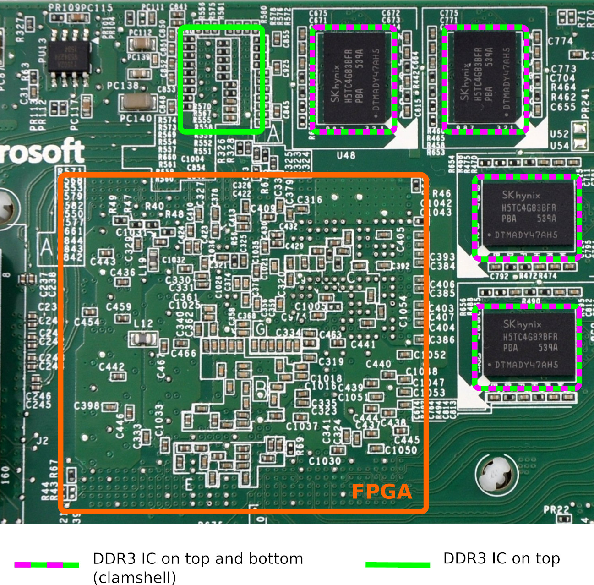
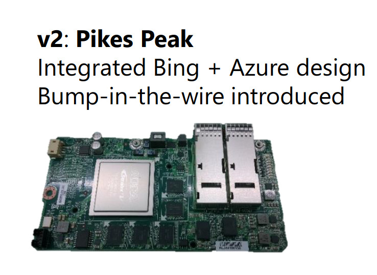
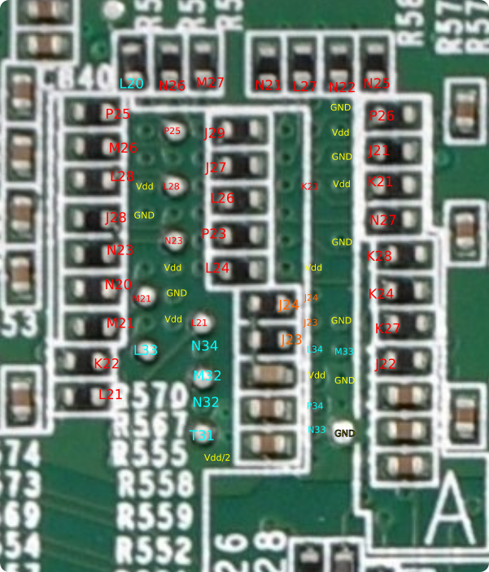
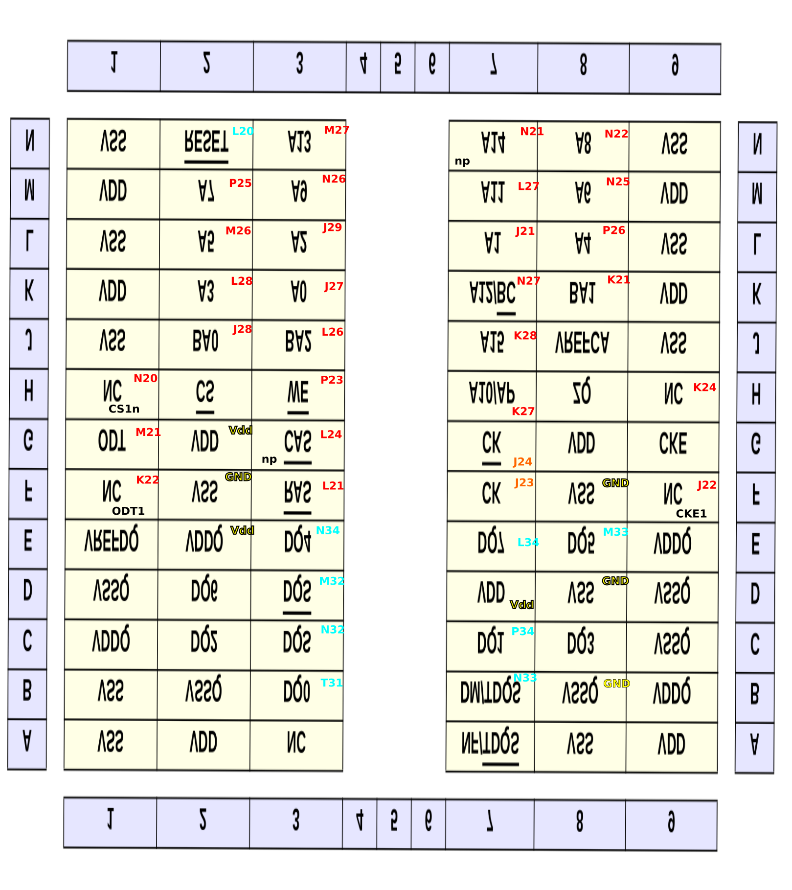
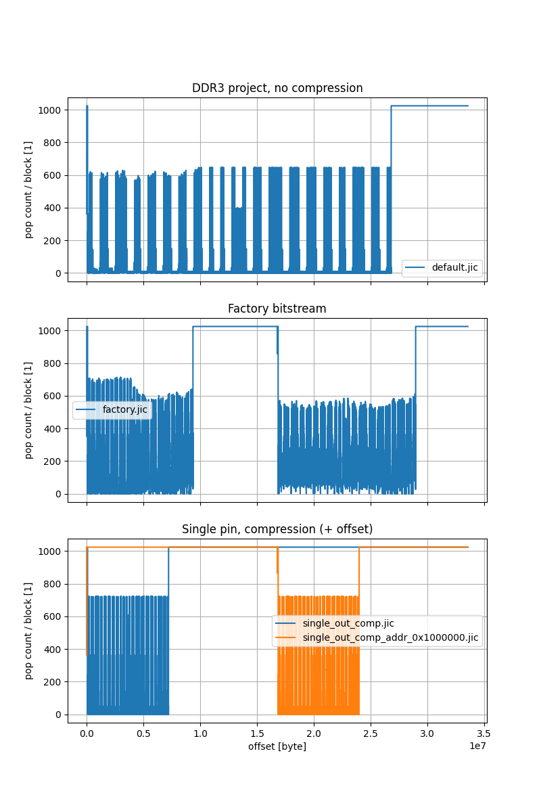
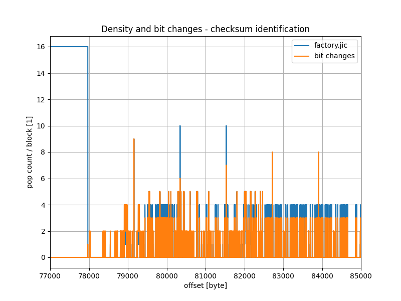
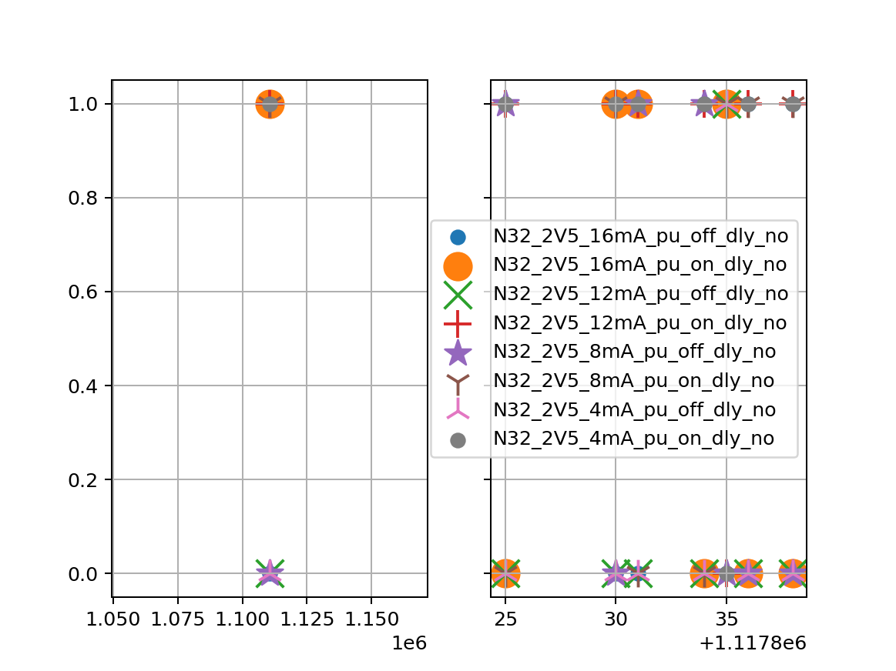
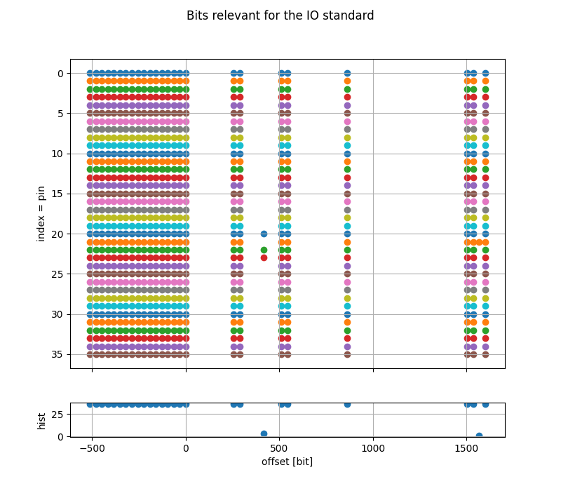

- on Sun 10 January 2021
The last piece of the puzzle on the Stratix V board is the DDR3 memory pinout. Once this is figured out, I can finally start using the board for my developments. It is obvious that this is not the most simple way to get a cheap FPGA development board, but I generally enjoy the challenges and also took this opportunity to learn something new. Being able to use a board without proper documentation is a valuable skill.
Introduction
Looking at the board from the bottom, we note that the board has 4 ICs on the bottom side and presumably 5 ICs on the top side. The markings on the chips indicate that this is H5TC4G83BFR-PBA - a 4 Gb (512M x 8) DDR3 IC. With a total of 9 ICs, the total interface width is 72-bit, which can be used as a 64-bit interface with ECC.

Looking at the presentation "Heterogeneous Computing @ Microsoft" from A. Putnam and K. Ovtcharov we can see the board without the heatsink which confirms that there are 5 DDR3 ICs on the top side. Another important detail that can be derived from this picture is the orientation of the FPGA; the memory interface is next to the upper right corner, which would correspond to the banks 8A - 8D.

From other sources we also know that there is a 125 MHz clock being feed into the pin M23 (in the IO bank 8D), and a dedicated high-quality clock is a must for a fast DDR3 interface.
Strategy
The DDR3 memory uses Dynamic On-Die Termination (ODT) for the data (DQ) and data strobe (DQS) pins but uses external resistors for termination on the address and control lines. On the Stratix V board, we can observe these resistors under the 5th DDR3 chip on the bottom side of the board.
Since tracks and vias are also somehow visible, figuring out the pinout between the FPGA and external resistors would already give us a starting point.
The data, data strobe, and data mask (DM) pins do not have any external termination resistors, and since all but 1 IC are placed in the clamshell topology, it would be also impossible to probe it with an oscilloscope (without physically modifying the board).
There are a couple of vias for DQ and DQS visible under the 5th IC which can be probed with an oscilloscope, but this is only a small portion of the interface. A different approach is needed.
Configuration Flash (EPCS/EPCQ)
The board contains an on-board Flash which is used to configure the FPGA upon boot. We already know that the board configures itself and exposes the PCIe endpoint, so we know that the Flash was not erased as a part of the disposal process. It is very likely that the DDR3 controller is also a part of the bitstream.
Altera provides a method to encrypt the bitstream with a 256-bit AES algorithm, with the key which is either stored in the fuses inside the device or in a volatile memory, backed by a battery.
Since the boards were never meant to be distributed to customers and were originally only used inside the data center, and since the management of the keys and setting up the provisioning workflow are non-trivial tasks, I would assume/hope that the bitstream stored in the Flash memory is not encrypted.
If the bitstream is not encrypted, then it should be possible to extract the pinout from the bitstream. Since the data pins in a DDR3 memory interface can be swapped around freely (one only needs to observe that the grouping between the data strobe and data), it is most likely enough to classify the I/O standard of the pins in question.
For DQ pins we can expect bidir SSTL, for DM SSTL output, for DQS differential bidir SSTL, ...
HW inspection
We start our exploration by inspecting the hardware itself. One can find some notes from VirtLab where a couple of pins are already mapped; this offers a good start.
I prepared a small FPGA project where pins are transmitting their location as an UART message - e.g. pin K21 will continuously transmit "K21 ". This allows quick determination of which pins are connected to which resistors with an oscilloscope.
Annotated on the picture below are the FPGA pins which can be detected on the termination resistors and vias. I have used color-coding to indicate the voltage level; the signals annotated in cyan have driven the output from rail to rail, which means that there is no external termination while with the signals in red the effect of the external termination can be observed in the signal level.

The annotation can be then transferred to the DDR3 chip pinout - we can see that we have managed to determine all address and control pins and a couple of data and data strobe pins. This will be useful as a validation for our future steps.

Reverse engineering the bitstream
At this point we have obtained every piece of information from the HW we can (without more intrusive procedures such as desoldering the DDR3 chips away). Now it is time to have look at the bitstream for Startix V.
The collection of scripts and other resources is available on my GitHub in a repository otma-pin-re.
JIC format
JIC stands for JTAG Indirect Configuration file which contains both the data to configure the EPCS/EPSQ device itself and the actual FPGA bitstream. Using Quartus Programmer one can dump the content from the EPCS or EPCQ into the JIC format.
Wirebond on GitHub already did this and stored the result here. I have used this file for my analysis.
EPCQ content
As one of the first steps I have plotted the bit density, i.e. how many bits are set in a 1024-bit block. 1024 is an arbitrary number, chosen to make plotting simple/fast.
Shown in the figure below are four different JIC files. On the first subplot we have a JIC file which I have generated from a DDR3 example design. On the second subplot there is a JIC file from the on-board EPCQ and on the third subplot are two JIC files (one with an offset for the FPGA bitstream) where the compression was enabled.

We can see that the bitstream from the EPCQ (factory.jic) contains two compressed FPGA images -
the first one immediately after the header and the second one at the half of the memory. Presumably,
the first image is a recovery image (since it is smaller in size) and the second one is an
application image.
Checksum
Zooming in at the beginning of the bitstream we can note an increase in bit density every 1188 bits. This is presumably a checksum.

Explored in the notebook bitstream_analysis/02_crc_checksum.ipynb is the checksum calculation. It can be confirmed that the checksum is calculated with CRC16 with Modbus polynomial, as it is mentioned in P. Swierczynski: Security Analysis of the Bitstream Encryption Scheme of Altera FPGAs.
Being able to calculate a checksum on the data can serve as a confirmation that one is correctly able to interpret the raw data. This will become especially important once we try to decompress the bitstream.
Compression
To save the space in the Flash memory, the bitstream in the EPCQ is compressed - this can be observed from the increased density in the plots in the previous section.
The algorithm for compression (and decompression) is described in the US patent 6525678.
To give an example, here are two excerpts, the first one from the uncompressed bitstream and the second one from the compressed.
227550 | 00 00 b6 f9 81 8b 00 00 2f e8 00 00 00 00 00 00
227560 | 00 00 00 00 00 00 00 00 00 00 00 00 00 00 00 00
*
2279f0 | 00 00 00 00 00 00 b6 f9 81 8b 00 00 2f e8 00 00
227a00 | 00 00 00 00 00 00 00 00 00 00 00 00 00 00 00 00
*
227e90 | 00 00 00 00 00 00 00 00 00 00 b6 f9 81 8b 00 00
227ea0 | 2f e8 00 00 00 00 00 00 00 00 00 00 00 00 00 00
225900 | 00 00 6f 9b ff 81 8b f0 2f e8 00 00 00 00 00 00
225910 | 00 00 00 00 00 00 00 00 00 00 00 00 00 00 00 00
*
225a30 | 00 6f 9b ff 81 8b f0 2f e8 00 00 00 00 00 00 00
225a40 | 00 00 00 00 00 00 00 00 00 00 00 00 00 00 00 00
*
225b60 | 6f 9b ff 81 8b f0 2f e8 00 00 00 00 00 00 00 00
225b70 | 00 00 00 00 00 00 00 00 00 00 00 00 00 00 00 00
We see that the non-compressed bitstream contains a sequence b6, f9, ... after a long string of
zeros. In the compressed bitstream the long string of zeros is interrupted by an f (which
indicates that the next 4 elements should be copied from the compressed bitstream) and followed by
b6, f9 (as in the original bitstream). The checksum is calculated after the decompression.
With this out of the way, we have a full bitstream where we can start identifying individual features.
Weak pull-up bit
One of the most simple changes regarding an IO pin is turning the weak pull-up resistor on and off.
I have explored the effect of changing the value of the weak pull-up resistor in the notebook extract_pin_addr/test_01-extract_pin_addr.ipynb. In one of the graphs, we can determine the address of the bit responsible for the weak pull-up, and the corresponding checksum bits.

With the confirmation that a pull-up is controlled by a single bit, I have decided to use this bit as a reference address for the rest of the configuration bits. For the classification I use bits at addresses relative to the pull-up bit, i.e. the pull-up bit has an address 0.
In the notebook extract_pin_addr/01_get_pu_addr.ipynb I have then determined the address of the weak pull-up bit for all pins in the banks 8A-8D. Those addresses are then (manually) copied to knowledge.py, which is then used in subsequent notebooks.
Pin configuration
The next step is to determine which bits are relevant for the I/O standard on the pin. I have prepared a lot of bitstreams with pins in different configurations, and then in the notebook extract_pin_addr/03_extract_io_std.ipynb extracted all the bits which are relevant for the IO standard.

Classifier
Once I have managed to get a vector of values that are relevant for the I/O pin standard, I have started to build a classifier. In the first attempt I let the classifier itself figure out which bits are relevant for which features, but I had better success with a hand-crafted classifier, presented in the notebook extract_pin_addr/05_classification_manual.ipynb.
Validation
I have prepared a small project with an 8-bit DDR3 interface and let the classifier classify the pins. I have purposely places also some address and control pins in the same bank, and left some of the pins disabled. The classifier correctly classifies all the pins, the results are presented in the notebook extract_pin_addr/06_validation.ipynb
Classification
At this point we can run the classifier on the decompressed image from the on-board Flash. Since
there are two images (a recovery image and an application image) available, I have decompressed both
and called them factory_decompress0.jic and factory_decompress1.jic.
I then ran the classifier on the second image and was amazed by the results. The classifier managed to find:
- exactly all 72
DQpins - 17 (out of 18)
DQSandDQSnpins, - 10
DMpins (9 + something which is counted as aDMbut it is something else), - 25 address and control pins (out of 25), and
- 5 unknown pins
At this point one could investigate why, for example, one of the DQS pins is not detected and improve the classifier to correctly detect all pins, but I have decided to go ahead and clean-up the results manually.
Clean-up
The clean-up was quite straightforward, since one can base the corrections on the pinout which was determined by physically probing vias and resistors in one of the previous paragraphs.
Out of 5 unknown pins, two were CK and CKn, one was the missing DQSn pin, one was the 125 MHz
clock and one was the RZQ pin. One of the pins which was incorrectly classified as DM pin was
actually a reset pin (L20).
The full table with the final pinout (DQ pins are omitted for brevity, check the last notebook)
is presented below.
| pin | dbg | class | addr | control | data | misc |
|---|---|---|---|---|---|---|
| J27 | inp=0, out=1, pu=0, io_std='Scls1', term=0, diff=0 | addr | A0 | |||
| J21 | inp=0, out=1, pu=0, io_std='Scls1', term=0, diff=0 | addr | A1 | |||
| J29 | inp=0, out=1, pu=0, io_std='Scls1', term=0, diff=0 | addr | A2 | |||
| L28 | inp=0, out=1, pu=0, io_std='Scls1', term=0, diff=0 | addr | A3 | |||
| P26 | inp=0, out=1, pu=0, io_std='Scls1', term=0, diff=0 | addr | A4 | |||
| M26 | inp=0, out=1, pu=0, io_std='Scls1', term=0, diff=0 | addr | A5 | |||
| N25 | inp=0, out=1, pu=0, io_std='Scls1', term=0, diff=0 | addr | A6 | |||
| P25 | inp=0, out=1, pu=0, io_std='Scls1', term=0, diff=0 | addr | A7 | |||
| N22 | inp=0, out=1, pu=0, io_std='Scls1', term=0, diff=0 | addr | A8 | |||
| N26 | inp=0, out=1, pu=0, io_std='Scls1', term=0, diff=0 | addr | A9 | |||
| K27 | inp=0, out=1, pu=0, io_std='Scls1', term=0, diff=0 | addr | A10 | |||
| L27 | inp=0, out=1, pu=0, io_std='Scls1', term=0, diff=0 | addr | A11 | |||
| N27 | inp=0, out=1, pu=0, io_std='Scls1', term=0, diff=0 | addr | A12 | |||
| M27 | inp=0, out=1, pu=0, io_std='Scls1', term=0, diff=0 | addr | A13 | |||
| N21 | inp=0, out=1, pu=0, io_std='Scls1', term=0, diff=0 | addr | A14 | |||
| K28 | inp=0, out=1, pu=0, io_std='Scls1', term=0, diff=0 | addr | A15 | |||
| J28 | inp=0, out=1, pu=0, io_std='Scls1', term=0, diff=0 | addr | BA0 | |||
| K21 | inp=0, out=1, pu=0, io_std='Scls1', term=0, diff=0 | addr | BA1 | |||
| L26 | inp=0, out=1, pu=0, io_std='Scls1', term=0, diff=0 | addr | BA2 | |||
| L24 | inp=0, out=1, pu=0, io_std='Scls1', term=0, diff=0 | addr | CASn | |||
| J23 | inp=1, out=1, pu=0, io_std='Scls1', term=0, diff=1 | ? | CK | |||
| J24 | inp=0, out=1, pu=0, io_std='Scls1', term=0, diff=1 | ? | CKn | |||
| K24 | inp=0, out=1, pu=0, io_std='Scls1', term=0, diff=0 | addr | CKE | |||
| N23 | inp=0, out=1, pu=0, io_std='Scls1', term=0, diff=0 | addr | CSn | |||
| M21 | inp=0, out=1, pu=0, io_std='Scls1', term=0, diff=0 | addr | ODT | |||
| L21 | inp=0, out=1, pu=0, io_std='Scls1', term=0, diff=0 | addr | RASn | |||
| L20 | inp=0, out=1, pu=0, io_std='S', term=1, diff=0 | DM | reset | |||
| P23 | inp=0, out=1, pu=0, io_std='Scls1', term=0, diff=0 | addr | WEn | |||
| N33 | inp=0, out=1, pu=0, io_std='S', term=1, diff=0 | DM | DM0 | |||
| T31 | inp=1, out=1, pu=0, io_std='S', term=1, diff=0 | DQ | DQ0 | |||
| P34 | inp=1, out=1, pu=0, io_std='S', term=1, diff=0 | DQ | DQ1 | |||
| N34 | inp=1, out=1, pu=0, io_std='S', term=1, diff=0 | DQ | DQ4 | |||
| M33 | inp=1, out=1, pu=0, io_std='S', term=1, diff=0 | DQ | DQ5 | |||
| L34 | inp=1, out=1, pu=0, io_std='S', term=1, diff=0 | DQ | DQ7 | |||
| N32 | inp=1, out=1, pu=0, io_std='S', term=1, diff=1 | DQS | DQS0 | |||
| M32 | inp=1, out=1, pu=0, io_std='S', term=1, diff=1 | DQS | DQS0n | |||
| M23 | inp=1, out=0, pu=0, io_std='2V5', term=None, diff=0 | ? | 125 MHz clk | |||
| E23 | inp=0, out=1, pu=0, io_std='S', term=1, diff=1 | ? | DQS2n | |||
| B34 | inp=1, out=0, pu=0, io_std='2V5', term=None, diff=0 | ? | RZQ | |||
| D21 | inp=0, out=1, pu=0, io_std='S', term=1, diff=0 | DM | 1 | |||
| D22 | inp=0, out=1, pu=0, io_std='S', term=1, diff=0 | DM | 2 | |||
| D25 | inp=0, out=1, pu=0, io_std='S', term=1, diff=0 | DM | 3 | |||
| E27 | inp=0, out=1, pu=0, io_std='S', term=1, diff=0 | DM | 4 | |||
| D28 | inp=0, out=1, pu=0, io_std='S', term=1, diff=0 | DM | 5 | |||
| E30 | inp=0, out=1, pu=0, io_std='S', term=1, diff=0 | DM | 6 | |||
| C34 | inp=0, out=1, pu=0, io_std='S', term=1, diff=0 | DM | 7 | |||
| H34 | inp=0, out=1, pu=0, io_std='S', term=1, diff=0 | DM | 8 |
Summary
In this blog post I have presented the procedure to obtain the DDR3 pinout from the Stratix V board. I have not yet tested the pinout on the real hardware, but I am pretty confident that it should work - I will leave this for the next post.
In general, the procedure was relatively straightforward, but had some obstacles on the way, for example compression, the not-completely-regular structure of the bitstream, and the checksums. I was also quite lucky that the bitstream itself was not encrypted, although it is understandable why this was not the case.
In the next blog post I plan to verify that the pinout presented here is accurate and perform some memory tests.
All trademarks and registered trademarks are the property of their respective owners.